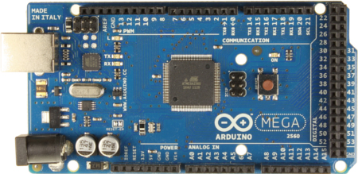

猫耳朵
三次元的豆瓣电台
Created by 刘阳 贺莹 师雪坤
It's demo time!

没有连接WIFI热点
去设置Web控制界面
还能推送哦~
这就是猫耳朵Ⅳ
- 即插即用，超方便
- 灵活的控制端
- 音质还算可以
拆开看看
控制端的实现方案
猫耳朵诞生记（前传）
先介绍一下作者们
刘阳
- 北航计算机专业
- 目前从事互联网创业
师雪坤
- 浙大应用数学专业
- 目前从事互联网创业
贺莹
- 北航计算机专业
- 腾讯公司交互设计师
日常的工作
看了这个电影，从此走上了一条不归路
四轴飞行器 (Quadrotor)
我的四轴，作为走向“创客”的第一个项目
于是乎，第二个项目也应运而生
为什么叫“猫耳朵”
受荷兰的“艺术家”扬森.巴特的作品启发
我们也热爱喵星人
猫耳朵诞生记（正传）
三次元的豆瓣FM
就应该保留豆瓣的血统
- 无线接入无束缚
- 即插即听
- 可远程操控
- 音质尽量好
- 长的不能太挫
如何设置无线密码？
- 虚拟键盘
- 连接电脑配置
- 登录无线热点
- 其他通信方式，比如蓝牙
- 二维码识别
Road Map
| WIFI | 播放声音 | 播放MP3 | 摄像头 | 二维码识别 | 产品化 |
猫耳朵Ⅰ
选择开发板
Arduino Mega 2560
- MCU : ATMEGA2560 (Atmel AVR) 16MHz 16bit
- flash memory : 256 KB
- SRAM : 8 KB
选择WIFI模块
GainSpan GS1010
- 完整的网络协议栈
- 串口连接
选择MP3模块
VS1003
- 支持多种音频格式解码 (MP3, WMA ...)
- SPI数据接口
猫耳朵Ⅰ合体
串口速率限制
Arduino Mega 2560串口最高波特率115,200
理论上只能支持115kbps的音频
| WIFI | 播放声音 | 播放MP3 | 摄像头 | 二维码识别 | 产品化 |
| 猫耳朵Ⅰ | |||||
猫耳朵Ⅱ
换板子！

Arduino Mega 2560
- MCU : STM32F103RB (ARM Cortex M3) 72MHz 32bit
- flash memory : 128KB
- SRAM : 20KB
- 串口最高波特率 : 2,250,000
摄像头
比较其他模块，这个最复杂
加个SD卡作为MP3流的Cache
猫耳朵Ⅱ合体
内存限制
20KB内存无法驾驭二维码识别
| WIFI | 播放声音 | 播放MP3 | 摄像头 | 二维码识别 | 产品化 |
| 猫耳朵Ⅰ | |||||
| 猫耳朵Ⅱ | |||||
猫耳朵Ⅲ
继续换板子！
STM32F4 DISCOVERY
- MCU : STM32F407VGT6 (ARM Cortex M4) 168MHz 32bit
- flash memory : 1024KB
- RAM : 192KB
猫耳朵Ⅲ合体
应用编写麻烦
需要从TCP层写起，不如先换个思路
| WIFI | 播放声音 | 播放MP3 | 摄像头 | 二维码识别 | 产品化 |
| 猫耳朵Ⅰ | |||||
| 猫耳朵Ⅱ | |||||
| 猫耳朵Ⅲ | |||||
猫耳朵Ⅳ
还是换板子！
Raspberry Pi 树莓派
- CPU : BCM2835 (ARM11) 700MHz 32bit
- RAM : 512MB
- OS : Arch Linux
下来就是外观
受到emoi基本生活的LED电子钟启发
我们是木工
胜利
| WIFI | 播放声音 | 播放MP3 | 摄像头 | 二维码识别 | 产品化 |
| 猫耳朵Ⅰ | |||||
| 猫耳朵Ⅱ | |||||
| 猫耳朵Ⅲ | |||||
| 猫耳朵Ⅳ | |||||
也许过程比结果更重要
猫不应该只有耳朵的
未来畅想，仅供“娱乐”
其实猫耳朵可以看成豆瓣FM的一个应用（端）
把豆瓣FM的外延扩大
一切音频的内容和应用都可囊括
- 根据喜好的音乐推荐（目前的豆瓣FM）
- 新闻推荐
- 事件提醒与朗读
- 个人电台（类似Podcast）
- ...